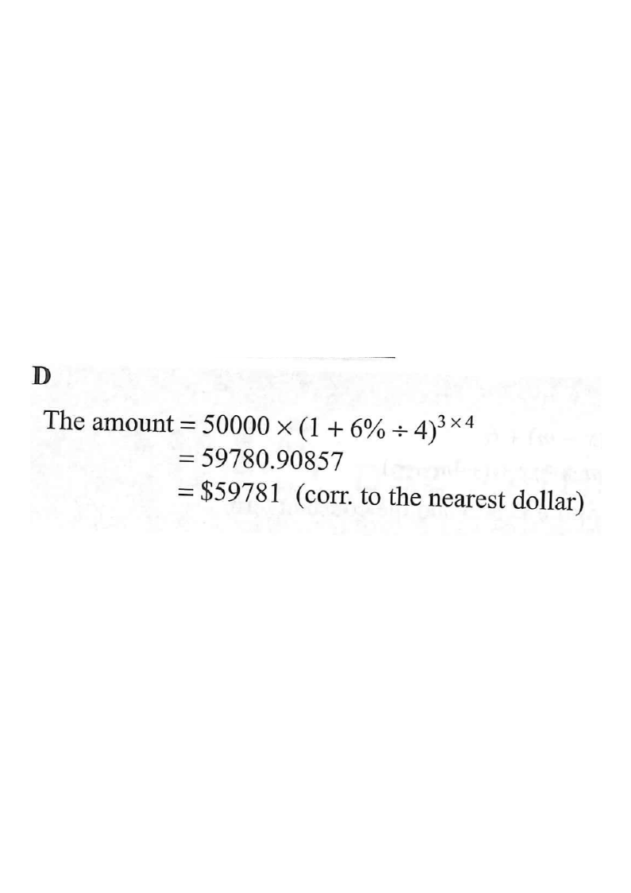

Scroll the solution steps to highlight the corresponding part.
[2015MC#10]
A sum of $\$50\,000$ is deposited at an interest rate of $6\%$ per annum for $3$ years,
compounded quarterly. Find the amount correct to the nearest dollar.
A. $\$59\,000$
B. $\$59\,551$
C. $\$59\,755$
D. $\$59\,781$

Figure (original exam diagram)
1Identify the given values
Principal $P = \$50\,000$, nominal rate $r = 6\%$ p.a.,
time $t = 3$ years, compounding frequency $n = 4$ (quarterly).
“Compounded quarterly” means interest is added 4 times a year.
2Rate per period and number of periods
Interest rate per quarter: $\dfrac{6\%}{4} = 1.5\% = 0.015$
Number of quarters in 3 years: $3 \times 4 = 12$
Divide the annual rate by the frequency; multiply the years by the frequency.
Rate per Compounding Period\(i=\dfrac{r}{n},\qquad N=nt\)Quarterly compounding gives \(i=\dfrac{6\%}{4}=1.5\%\) per quarter and \(N=3\times4=12\) quarters.
Substitute the values from Steps 1 and 2 into the formula.
Compound Interest Formula\(A=P\left(1+\dfrac{r}{n}\right)^{nt}\)With \(P=50\,000\), \(r=6\%\), \(n=4\) and \(t=3\), the amount is \(50\,000(1.015)^{12}\).